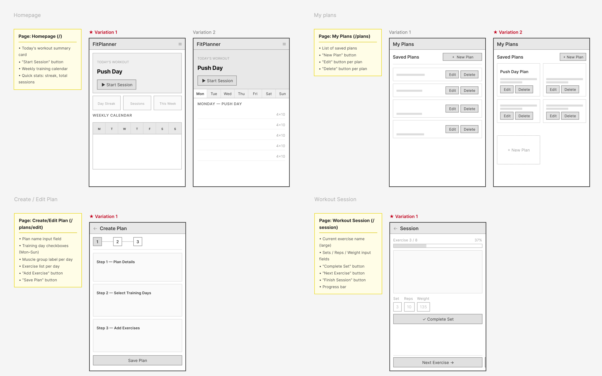
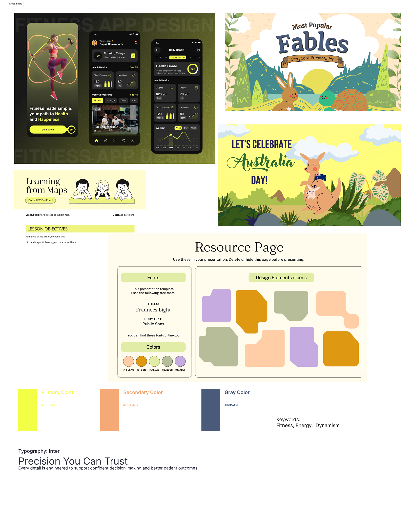

PulseFit is a mobile-first fitness planner I designed and built for ARTGR 5840's final project. The app helps lifters plan weekly routines, log sets and reps during live workouts, and track strength progress over time. I owned the full stack — product flows, dark-theme UI system, React front end, and Supabase data layer — with a seeded demo mode so the experience works without a live backend.
Challenge
Planning and logging shouldn't require digging through cluttered menus.
Generic fitness apps often bury planning and logging under cluttered navigation. I needed a focused phone-native experience that could still support real user accounts, persistent plans, and meaningful progress data. The constraints were tight: every screen had to follow a strict DESIGN.md (neon yellow on charcoal, one primary CTA per view, 390×844 phone viewport), ship across eight core routes, and remain usable in demo mode when Supabase credentials aren't configured.
Solution
I shipped a React + TypeScript app with eight routes — home, plans, plan editor, live session, progress, history, settings, and auth — wrapped in a phone shell with a fixed tab bar. Users create multi-day workout plans with muscle-group assignments and exercise catalogs, activate plans to populate a weekly overview, then start sessions from a card-deck UI that supports swipe navigation, weight/rep logging, and inline exercise guides. Progress and history surfaces pull from logged sessions to show PR badges, Recharts strength trends, and expandable session detail. A centralized mock dataset seeds realistic demo data on first sign-in so reviewers can explore the full flow immediately.
Process
How I moved from design tokens to a working product — across system setup, flow mapping, component build, and data integration.
1Design System
2User Flows
3Component Build
4Data Layer
Design System
Established semantic tokens in tokens.css, component rules in styles.css, and DESIGN.md constraints; validated every interactive state on a reference screen before building features.
User Flows
Translated PLAN.md into eight routes — plan, log, track, and configure — with wireframes for home, plans, session logging, progress, and settings.
Component Build
Wired blank pages with React Router, Radix UI, Tailwind CSS, and Framer Motion; iterated most on the swipe-based session card deck with weight/rep logging and inline exercise guides.
Data Layer
Connected Supabase auth and Postgres tables for plans, sessions, and profiles, then added a demoStore fallback that mirrors the same data shape when VITE_USE_MOCK_DATA is enabled.
AI-Assisted Development
A look at some of the actual prompts used to build this app with AI assistance.
Prompt walkthrough
1 / 8
Slide 1 — Refining the plan preview flow
Add a button of Preview. Remove the buttons of edit and delete. When the user preview the plans, then they can edit or delete
Result
Worked as intended. Users now preview a plan first, then choose to edit or delete from there, instead of having those actions exposed directly on the list.
Slide 2 — Making the home dashboard interactive
Make weekly overview interactive, clickable. For example, when i click M or T, it will show the detailed sessions below
Result
Worked well. Clicking a day in the weekly overview now expands to show that day's detailed sessions below, making the dashboard feel more explorable instead of static.
Slide 3 — Setting Workout as the default start page
move the workwork in the middle, and make it as default start page when the user opens the app
Result
Worked as intended — the Workout tab was reordered to the center of the tab bar and set as the app's default route, replacing Home as the entry point so users land directly on today's session.
Slide 4 — Fixing set-counting logic
Set 12 of 3 doesn't make sense. Once the user finishes the last set of the exercise, the app should stop counting and auto move to the next exercise, not just keep letting them log set 4, 5, 12...
Result
Fixed. Set counting now stops at the target and auto-advances to the next exercise instead of letting the count climb indefinitely.
Slide 5 — Designing a swipeable exercise card stack
Turn each exercise to one card, listed like a fan of playing cards. You can see slivers of the next few cards behind this one. Swipe left/right to move between exercises
Result
Worked well. Exercises now render as a card stack with the next few cards peeking out behind the current one, and swiping moves between them.
Slide 6 — Replacing a confusing progress chart
This section is confusing. Does it mean 6–13 had the best record? But why show it as an unnecessary bar? Consider it again, then change it to a more visible method.
Result
Worked well. Replaced the ambiguous bar chart with a clearer StrengthTrend component that shows PR history in a way that's actually easy to read at a glance.
Slide 7 — Organizing session history by time
Keep past sessions as a list, but group it by time instead of one long scroll. For example, collapsible sections 'This week,' 'Last week,' 'Jun 8–14,'. That means you can filter it
Result
Worked well. Past sessions are now grouped into collapsible time-based sections instead of one continuous scroll, making history much easier to navigate.
Slide 8 — Preparing consistent demo data for grading
When other user open/test this website, they should create and log in an account. Plz make sure they have and can see the same prebuilt data as me, as pages now show. Since the instructor will test and grade this app
Result
Implemented. Any new account now loads the same prebuilt demo data (plans, sessions, PRs) so the app looks and functions consistently for graders regardless of who logs in.
Sketching
Early wireframes explored homepage layouts, plan management, multi-step plan creation, and the live session logging flow. Starred variants became the baseline for high-fidelity screens.

Core flows — home, plans, editor, sessionProgress, history, and settings
Information architecture
PulseFit is organized around four jobs — plan, log, track, and configure — so lifters always know where to go next. Home is the hub: start today's session, scan the week, and jump into plans, progress, or history from there. Secondary screens nest under those jobs (for example, creating or editing a plan lives under My Plans) instead of competing in a flat menu.
Home/
Today's workout
Weekly overview
Quick stats
My Plans/plans
Plan list
Create / Edit Plan/plans/edit
Day & muscle groups
Exercise list
Workout Session/session
Current exercise
Set / rep / weight
Session progress
Progress/progress
Exercise selector
PR badge & chart
Time range filter
History/history
Past sessions
Session detail
Settings/settings
Profile
Units (lbs / kg)
Notifications
Auth/auth
Sign in / Sign up
Demo mode entry
Solid box = full page / route
Dashed box = section or sub-page content
Site map of PulseFit's eight routes and key page sections
Visual development
Mood-board research balanced high-energy fitness UI references with a restrained dark palette. Neon yellow became the primary action color; orange handles secondary emphasis and count badges without competing with the main CTA.

Reference apps, palette exploration, and type direction
Style guide
PulseFit uses a dark-theme token system — charcoal surfaces, neon yellow primary actions, and Public Sans across all text. Components share one radius and a border-plus-shadow elevation model.
Color palette
Charcoal · bg.base
Neon · accent.primary
Orange · accent.secondary
White · text.primary
Typography
PulseFit
Section heading · 20px bold
Body copy uses Public Sans at 16px regular with comfortable line height for session logging and plan editing.
Components
Start workoutQuick logPR
Gallery
Six high-fidelity screens trace the core experience — from today's plan on the home dashboard through live logging, exercise guides, plan management, and session history.
Home — today's workout cards, quick stats, and weekly plan overviewSession — swipeable exercise deck with set logging and progress trackingExercise guide — inline form instructions with muscle-group diagramMy Plans — saved routines with day-by-day exercise previewsPlan preview — training-day breakdown with exercise detail modalHistory — streak metrics, time-range filters, and PR-highlighted session log
Outcomes
PulseFit demonstrates end-to-end product thinking — from structured design tokens and mobile interaction patterns to a working data model with 33 seeded exercises and 12 sessions of history. The app runs in dev with npm run dev, builds cleanly for deployment, and degrades gracefully to demo mode without backend setup.
Reflection
Keeping one primary yellow CTA per screen improved scanability on dark surfaces more than I expected — it forced hard choices about what each view was for. Matching mock data schemas to Supabase tables from the start made the auth-to-demo transition seamless, which saved hours during stakeholder demos. Next time I would add rest-timer support between sets, social sharing of PRs, and offline session caching so logging survives spotty gym Wi‑Fi. The main takeaway: a seeded demoStore that mirrors production schemas is worth building on day one, not as an afterthought.
Deployment
The app builds with Vite for static hosting and connects to Supabase when credentials are configured. Demo mode ships with seeded plans, sessions, and a 33-exercise catalog so reviewers can explore every route without setup. Deployed at pulsefit-planner.netlify.app.
Try it yourself
Open the live prototype to plan workouts, log a live session, and review strength progress — demo mode works without any backend setup.